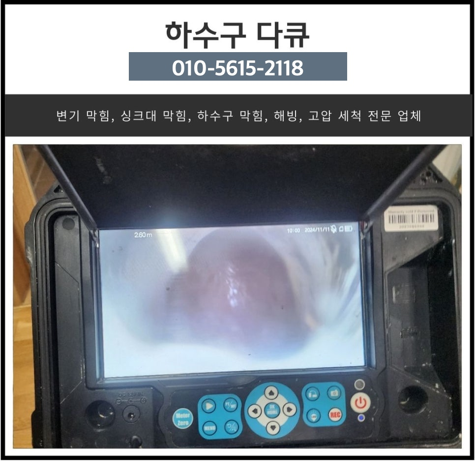
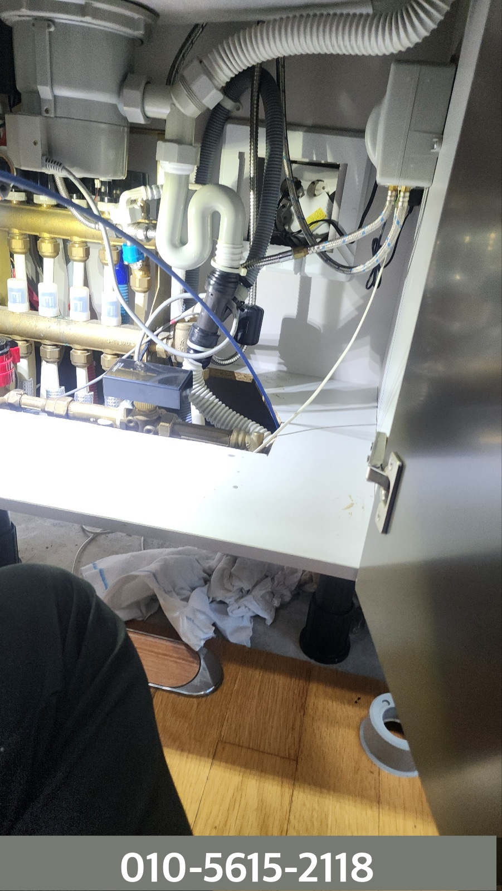
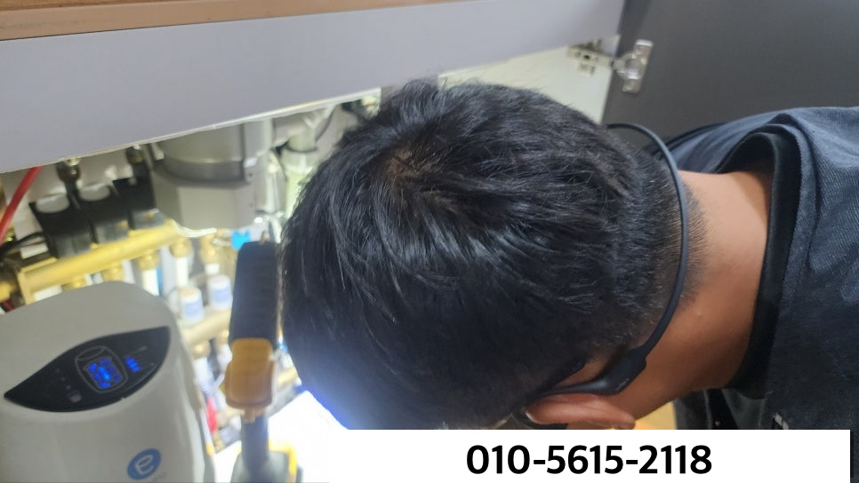
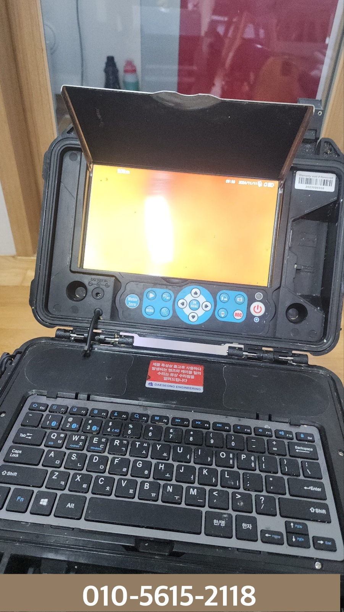
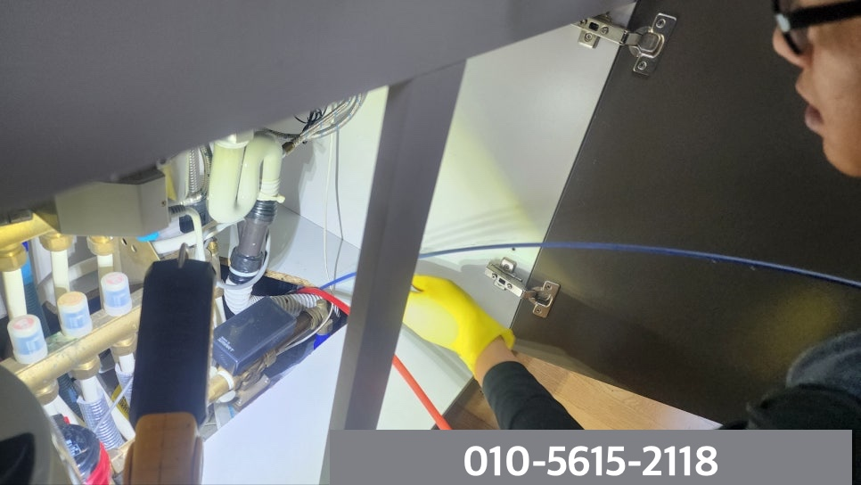
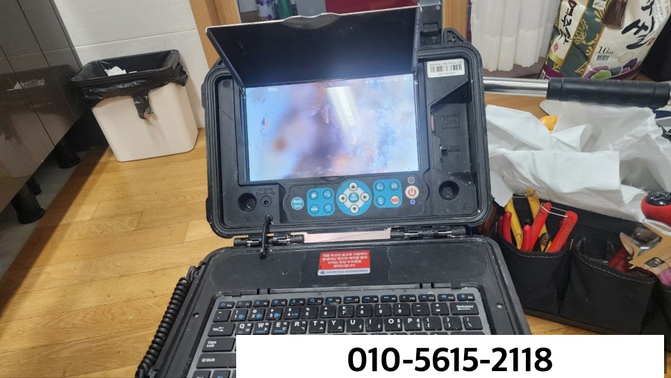
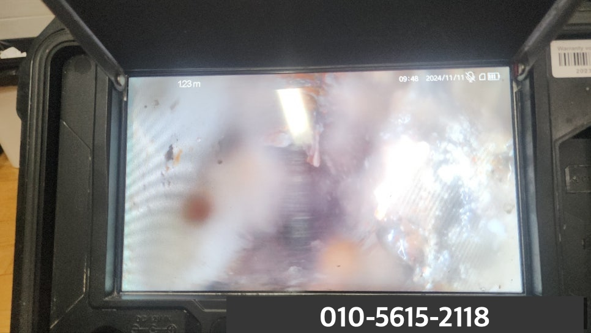

🏠 광주 오포읍 싱크대 막힘 신현동 하수구 배관 뚫는 곳 설비 업체
용인시 처인구 배관막힘 전문 시공 후기

📋 작업 개요
- 위치: 용인시 처인구
- 서비스 유형: 배관막힘, 내시경점검
- 작업 일시:
- 업체명: 하수구수사대 (010-5615-2118)
🔍 문제 상황
안녕하세요.
광주 오포읍 싱크대 막힘 신현동 하수구 배관 뚫는 곳 설비 업체 하수구 다큐입니다.
신현동 하수구 배관 뚫는 설비 업체 하수구 다큐가 소개해 드릴 현장은 경기도 광주에 위치한 아파트 싱크대 막힘 현장입니다.
주방 싱크대에서 막힘이나 역류, 넘침 등이 발생하게 되면 싱크대를 잘못 사용하고 있는 건가? 하고 생각하시는 분들이 많아요.
하지만 대부분의 주부님들은 사용하신 기름은 키친타월로 닦아 분리배출하시고, 음식물이 배수구로 흘러가지 않도록 관리를 철저하게 하고 계시지만 문제는 국이나 탕 같은 국물 요리입니다.
가족들이 먹고 남긴 된장국, 김치찌개 등 국물이 남게 되면 싱크대 배수구로 버릴 수밖에 없는데요.
국물에 포함되어 있는 기름 성분이 배수관으로 흘러가면서 배관 벽면에 조금씩 묻어 쌓이기를 반복하고, 오랜 시간 누적되어 기름 슬러지로 변하게 됩니다.

🔎 원인 분석
💡 전문가 진단: 정밀 진단 장비를 사용하여 슬러지의 고착 여부를 판명하고 타격/세척 작업을 실시했습니다.
마치 우리가 나이를 먹으면서 자연스레 혈관에 노폐물이 쌓여 심혈관 질환이 생기는 것과 비슷하기 때문에 자책하지 않으셔도 됩니다.
오늘도 고객님의 연락을 받고 신속하게 광주 오포읍 싱크대 막힘 현장에 방문해 드렸어요.
주방으로 들어가 싱크대를 살펴보니 이미 걸레 받이를 제거하시고 역류한 물과 이물질을 걸레로 닦으신 상태셨습니다.
싱크대와 연결된 주름 배관에서 이물질이 넘쳐나온 것으로 보아 배관 내부에 많은 이물질이 쌓여 있을 것으로 예상할 수 있었어요.
정확한 배관 내부를 점검해 보기 위해 내시경 카메라를 진입시켜 확인해 보기로 했습니다.
내시경 카메라가 진입하자마자 기름 슬러지가 가득 차 있는 게 확인되었습니다.
카메라에 달려있는 조명 때문에 붉게만 보이는 상태로 고객님께 배관의 상태를 설명해 드리고 배관 스케일링을 진행하기로 했어요.
과거에는 스프링을 이용해 물구멍을 내는 작업을 많이 하다 보니 금세 다시 막혔지만, 최근에는 플렉스 샤프트 장비를 사용해 모든 이물질을 제거하고 배관을 새것처럼 청소해 드리고 있습니다.

🔧 작업 과정
내시경 카메라로 배관을 살펴보며, 리지드 플렉스 샤프트 장비를 이용해 쌓여있는 이물질을 제거하는 작업을 시작합니다.
배관의 내부 모습을 육안으로 확인할 수 없다 보니 내시경 카메라를 이용해 이물질의 위치와 배관의 구조 등을 파악하면서 플렉스 샤프트 장비를 작동시켜 이물질을 조금씩 제거하는데요.
중간중간 내시경으로 확인해 가며 진행하게 됩니다.
처음 배관 내부를 촬영했을 때와는 다른게 느껴지시나요?
조금씩 통수가 시작되면서 쌓여있는 이물질이 선명하게 모습을 들어내기 시작합니다.
리지드사의 플렉스 샤프트 장비의 경우 본체에 연결한 전동드릴을 작동시키면 노즐 끝에 달려있는 체인이 배관 내부에서 강하게 회전하며 붙어있는 이물질을 타격해 떨어트려주는 역할을 하는데요.
워낙 오랜 시간 배관 내부에 쌓인 기름 슬러지의 양이 많다 보니 작업이 쉽지 않았습니다.
여러 차례 반복해서 작업을 진행하자 배관이 제 모습을 드러내기 시작합니다.
많은 양의 이물질이 쌓여있었다는 게 믿기지 않을 정도로 깨끗해진 모습이 보이시나요?
속이 다 시원해집니다.
신현동 하수구 배관 뚫는 곳 설비 업체 하수구 다큐는 마지막으로 많은 양의 물을 한꺼번에 흘려보내며, 배관 내부에 다른 문제는 없는지 내시경 카메라를 이용해 다시 한번 체크해 드리고 작업을 마무리할 수 있었습니다.
싱크대 막힘이 발생하는 것은 자연스러운 일입니다.


✅ 작업 완료
물론 문제가 발생하지 않는다면 정말 좋겠지만 지금 하수구 막힘으로 고민하고 계신다면 주저하지 마시고 연락 주세요.
하수구 배관 전문가! 하수구 다큐가 직접 시원하게 뚫어드리겠습니다.
경기도 용인시 처인구 중부대로1313번길 20-25 2층 202호 나21




⚠️ 하수구 배관 막힘 예방 및 관리 가이드
- ✅ 머리카락, 비닐, 물티슈 등 물에 분해되지 않는 이물질은 절대 흘려보내지 마세요.
- ✅ 기름기 많은 식기는 설거지 전 키친타올로 먼저 기름때를 닦아내세요.
- ✅ 주기적으로 배수구에 뜨거운 물을 가득 부어주어 유지방 고착을 방지하세요.
- ✅ 작업 후 1년 이내 재발 시 무상 A/S 보증 서비스를 제공합니다.
💡 핵심 정리
- 확실한 장비 작업(내시경 점검 및 샤프트 스케일링)으로 원인을 뿌리 뽑습니다.
- 작업 후 1년 이내에 동일한 부위 재발 시 100% 무상 A/S 서비스를 보장합니다.
- 서울 · 경기 · 인천 전 지역에 24시간 언제든 긴급 출동할 수 있도록 항시 대기 중입니다.
❓ 자주 묻는 질문 (FAQ)
🚨 용인시 처인구 배관막힘 문제로 고민이신가요?
정확한 원인 진단과 확실한 시공으로 재발 없는 해결을 약속드립니다.
24시간 긴급 출동 | 서울 · 경기 · 인천 전지역 | 1년 내 재발 시 무상 A/S